SECTION 01 / 电影
银幕上的饕餮与麒麟
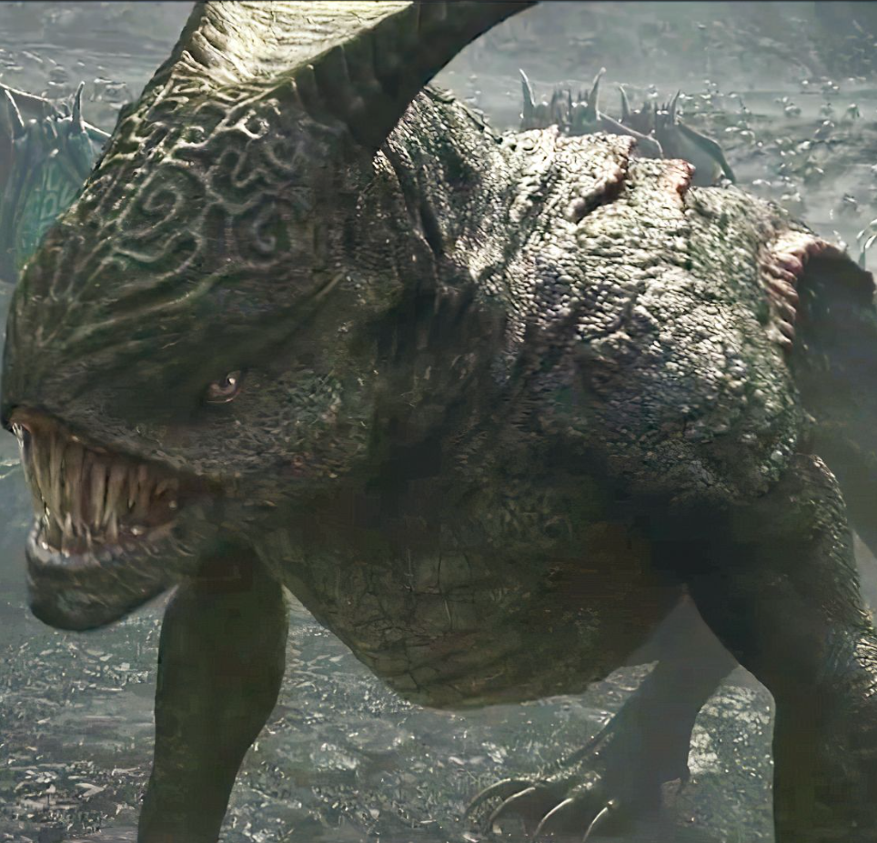
《长城》
张艺谋执导，以饕餮为原型。每六十年降临一次，兽王指挥千万异兽，设定极具震撼力。
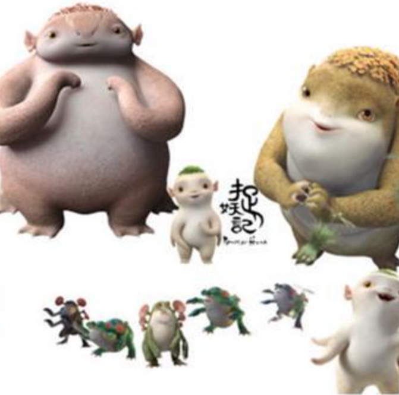
《捉妖记》
导演许诚毅从《山海经》六足怪获灵感，创造了经典的“胡巴”形象。
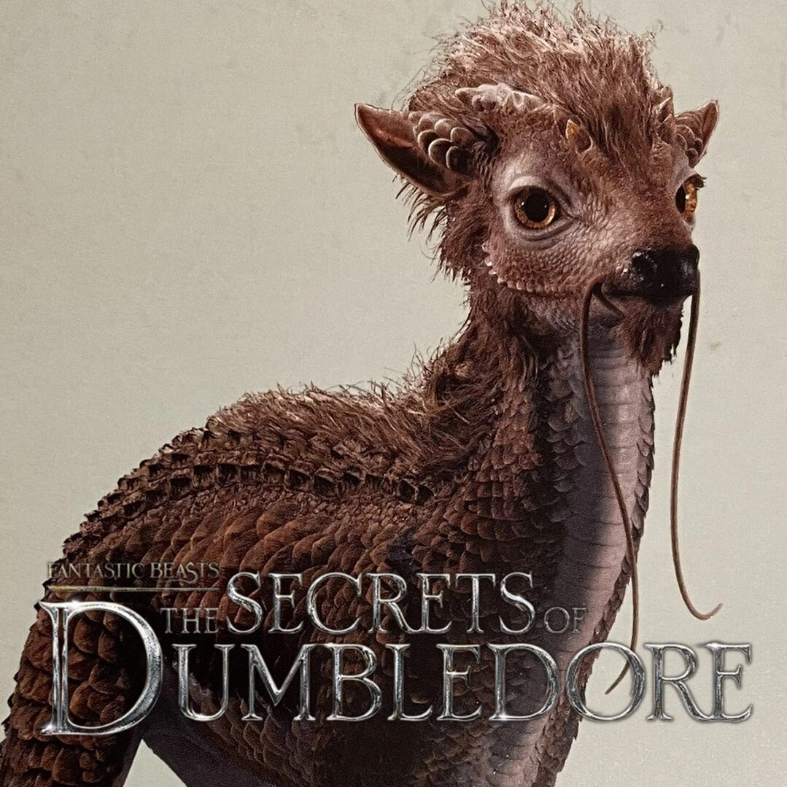
《神奇动物》
JK·罗琳在作品中引入驺吾、麒麟等神兽，融合中国传统绘画元素。
SECTION 02 / 动画
此去经年，大鱼海棠
《大鱼海棠》几乎将《山海经》的神祇世界观整体复活：祝融、句芒、后土、白泽... 每一个角色都承载了上古神话在现代审美下的新生。
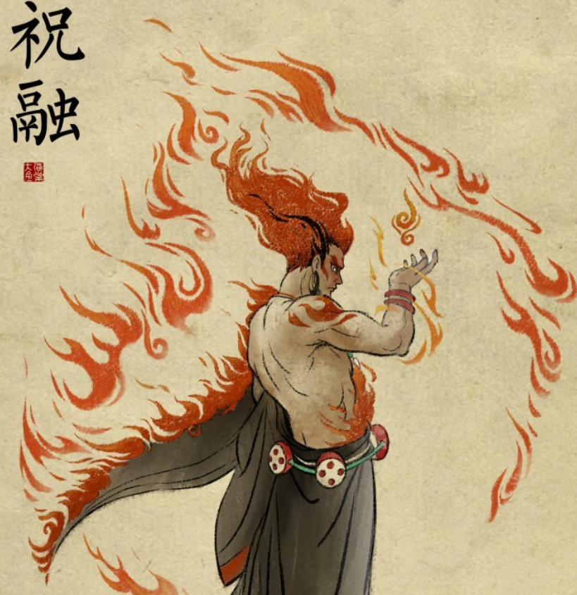
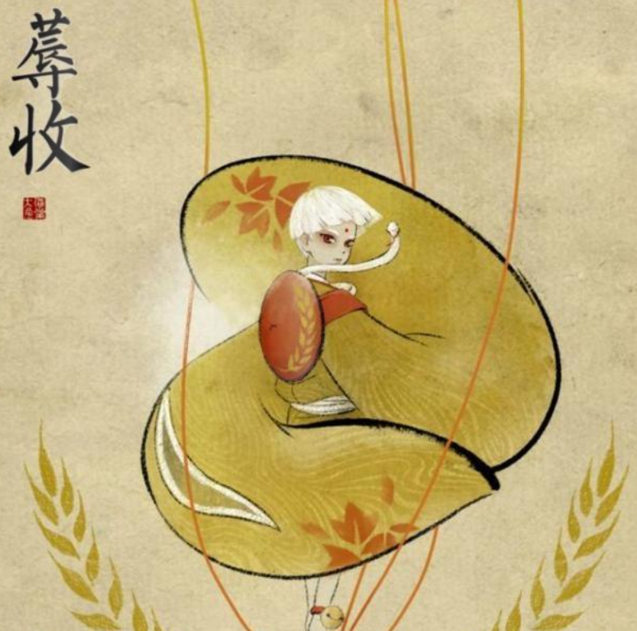
《大圣归来》中的混沌
反派“混沌”借用《山海经》中“无面目、六足四翼”的设定，重塑为邪恶巨兽，赋予了传统形象更强的戏剧冲突。
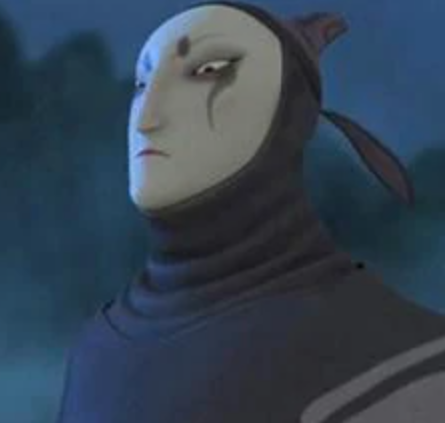
SECTION 03 / 游戏
指尖下的大荒纪元
《原神》· 璃月仙踪
甘雨之于麒麟、钟离之于圣龙。魈的傩面、申鹤的仙兽... 米哈游通过数字交互，让玩家在璃月港体验鲜活的山海经渊源。
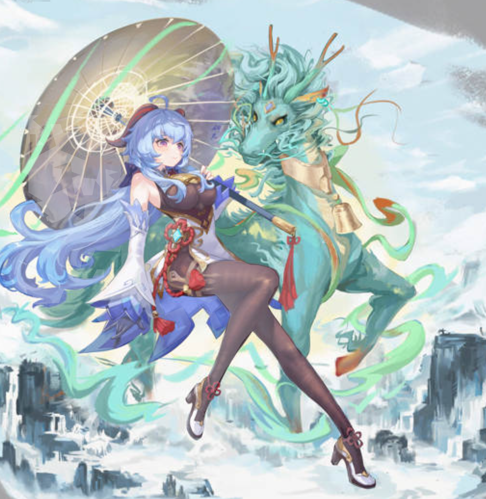
《仙剑奇侠传》系列
系列游戏以《山海经》为蓝本。如《仙剑四》中的句芒，造型精准还原了古籍中的木神形象，成为仙侠世界的经典符号。
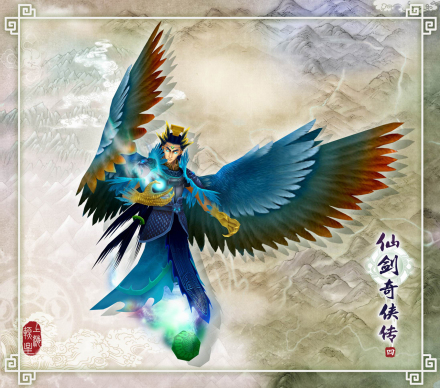
SECTION 04 / 艺术
当代画师的重笔描摹
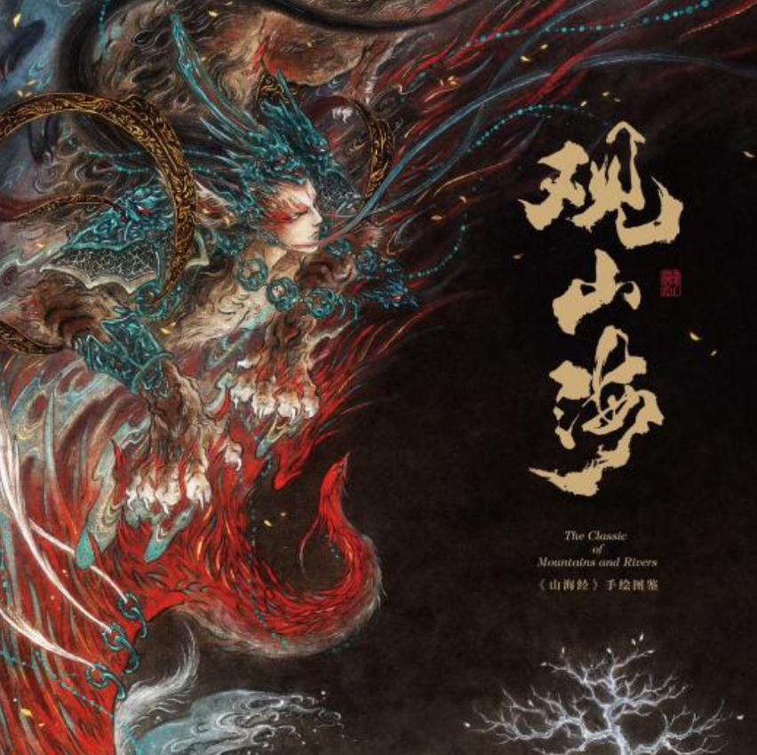
杉泽《观山海》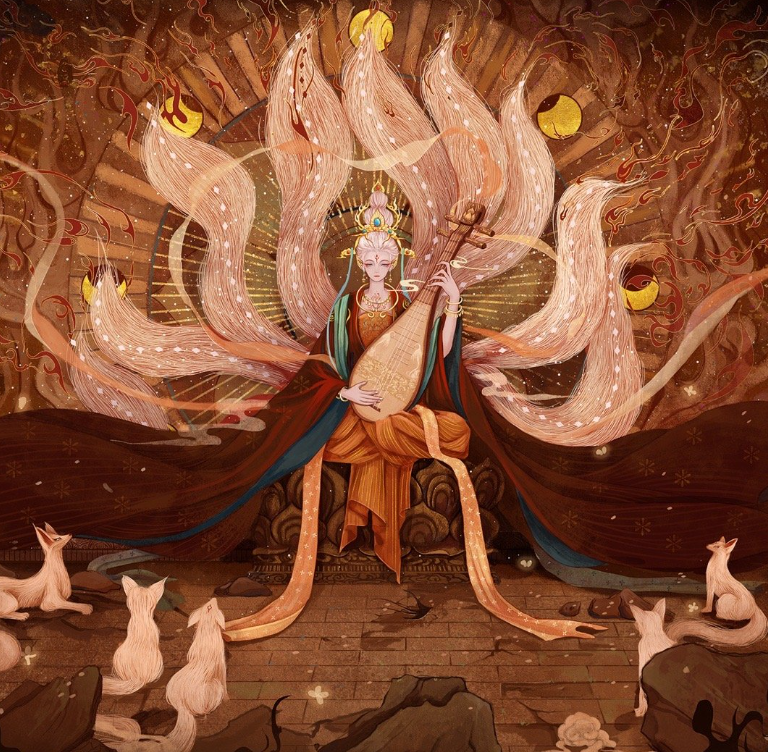
舍溪《境》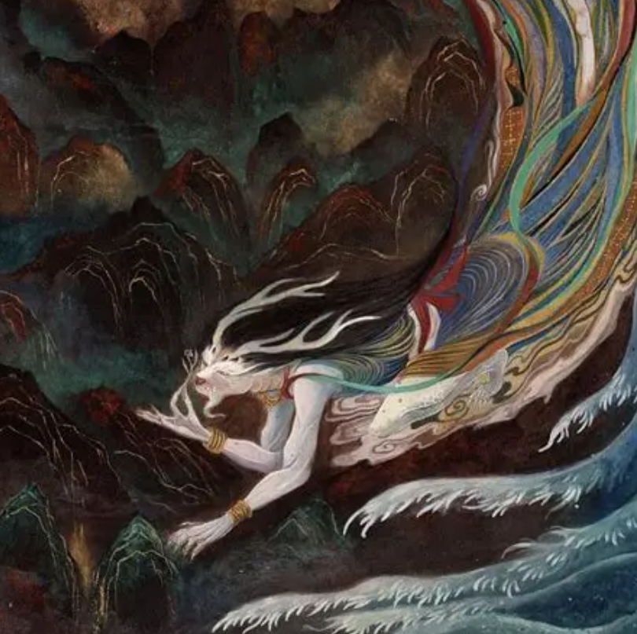
鹿溟山《山海灵》“以现代国风技法重新诠释古老志怪，成为文化传播的重要载体。”
多元宇宙的扩张
主题展览与数字艺术
利用全息投影、VR技术让异兽“活”起来。如“寻迹山海”光影展。
文创产品与潮玩
“山海经·神兽”盲盒系列，将传统文化与潮流收藏完美结合。
音乐与舞台剧
原创音乐剧以上古神话为蓝本，用现代语言讲述精卫填海的故事。
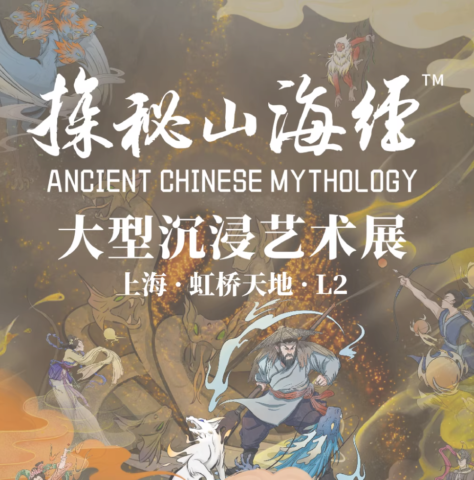
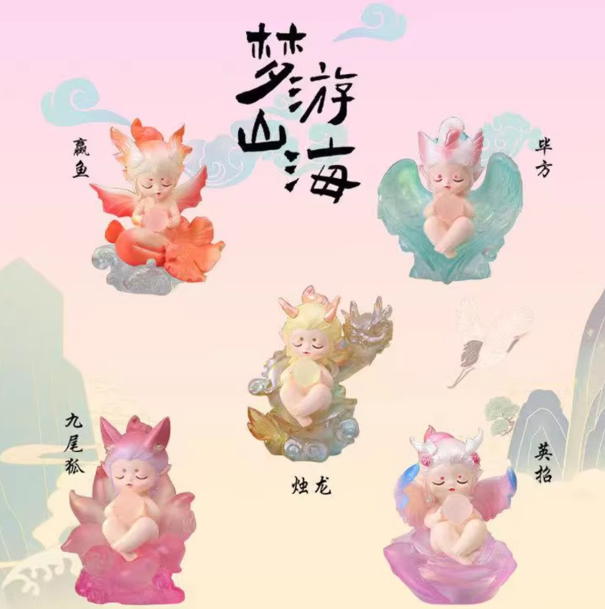
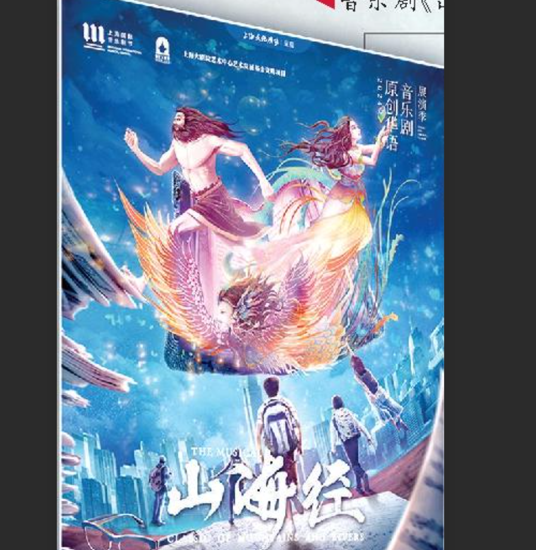